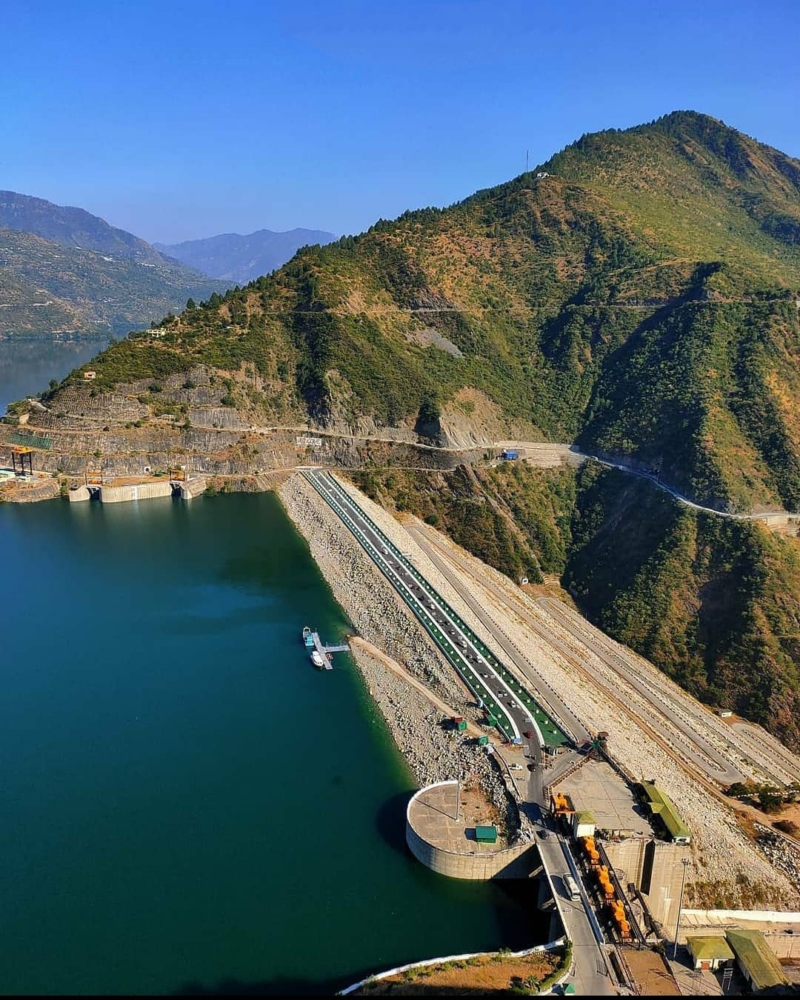

Dams
Uttarakhand, the popular state lying to the North of India is famous for its many dams but the Tehri Dam is its most famous showpiece. It is not only the highest dam in India but also the tallest in the world. Uttarakhand boasts of several other big and small dams which were built over the years for various purposes. Here is a list of the major dams in the state of Uttarakhand.
The Tehri Dam
The Tehri Dam which later expanded to include the Tehri Development Project is the state’s chief hydroelectric project situated in the Tehri Town in the seismic gap of the central Himalayas. It was completed in 2005. The region is extremely earthquake prone but the dam has been built to withstand an earthquake of magnitude 7.2 on the Richter scale according to the authorities.
Tehri has a power generation capacity of 2400 MW and also meets the irrigation needs of an area encompassing 270,000 hectares. The dam also supplies around 270 million gallons of drinking water per day to the industrialized areas of Delhi, Uttar Pradesh apart from Uttarakhand. The dam is 575 meters in length and 260.5 meters in height. The full reservoir level of the Tehri Dam is 830 meters.
The Dhauliganga Dam
The Dhauliganga Dam is another major dam in Uttarakhand. It is located in the triangle between India, and its neighboring states. The construction of the dam and its functioning is jointly supervised by Kajima Corporation of Japan and Daewoo Corporation of the Republic of Korea. Work on the dam commenced in 2000 and was completed in 2005. It was built for hydroelectric power generation and water storage purposes. The concrete faced dam has a length of 270 meters and is raised to a height of about 56 meters. The full reservoir level of the Dhauliganga Dam is about 70 meter.
The Ramganga Dam
The Ramganga Dam is another major dam of Uttarakhand and has been constructed to serve the state’s electricity and irrigation needs. It is an earth and rock filled dam situated on the Ramganga river. Construction began in 1961 and was completed in 1974. Ramganga Dam is 128 meters tall and 715 meters long.
The dam is approximately three kilometers upstream of Kalagarh in the Pauri District. The dam produces approximately 450 million units of hydro-electricity annually and contributes around six cumec of potable water through UGC System to Delhi and adjoining areas. The dam was the highest rock fill and earth fill dam in Asia when it was completed in 1974.
Other major dams of Uttarakhand include:
- Bhimtal Dam
- Dhora Dam
- Ichari Dam
- Jamrani Dam
- Lakhwar Dam
The state also has many other smaller dams and bunds.